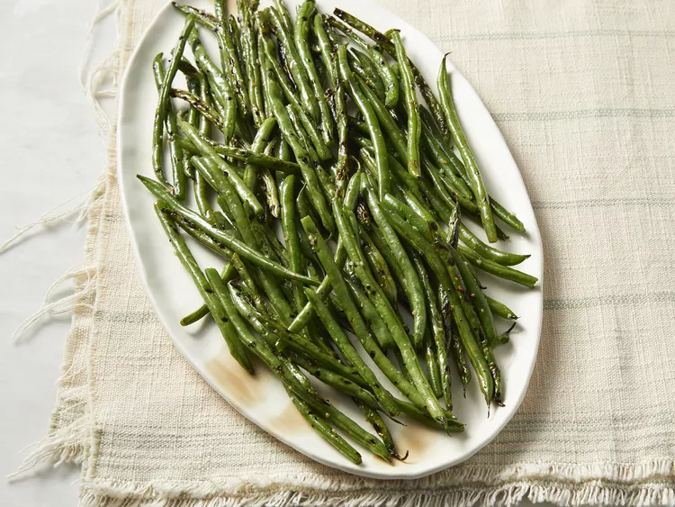

Home
Grilled Green Beans
These grilled green beans with olive oil and garlic taste great, and are an easy way to use up those garden green beans while grilling on warm summer evenings. Incredibly tasty and simple!

Ingredients
- 1 pound fresh green beans, trimmed
- ¼ cup olive oil
- 1 teaspoon minced garlic
- 1 teaspoon kosher salt
Steps
- Gather all ingredients.
- Combine green beans, olive oil, garlic, and salt in a bowl; toss to coat. Allow green beans to marinate for 30 minutes.
- Preheat the grill for medium heat and lightly oil the grate. Arrange green beans on a grill pan.
- Place the grill pan on the preheated grill; cook and stir green beans until lightly charred and cooked to desired doneness, about 10 minutes.